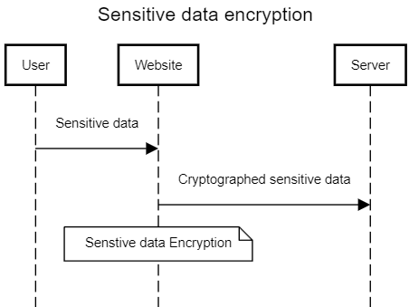

Introduction to Secure Software Development
Open source tools are available to create UML diagrams, some are listed below. This list is not exhaustive. The benefit of using such tools is that they ensure that the recognised UML components are used to represent the parts of the model correctly.
Visual Paradigm
Sequence Diagram
Umbrello
Choose an open-source UML tool from the list above. Select one of the coding weaknesses which have been identified by OWASP and create a flowchart of the steps which may have led to the weakness occurring. Which UML models might you use to present the design of your proposed software, and why are they the most appropriate choice(s)?
Visual Paradigm
Sequence Diagram
Umbrello
Choose an open-source UML tool from the list above. Select one of the coding weaknesses which have been identified by OWASP and create a flowchart of the steps which may have led to the weakness occurring. Which UML models might you use to present the design of your proposed software, and why are they the most appropriate choice(s)?
In 2021, OWASP determined that Cryptographic failures is to be placed in the top ten weaknesses within websites (CWE - CWE-1344: Weaknesses in OWASP Top Ten, 2021).
The normal flow of transfer of secure data, such as signing into an account, is illustrated in the UML sequence diagram bellow.
In this situation, as the sensitive data is entered into the website, an encryption program scrambles the data that only authorised parties with the decryption method can read it. This prevents cyber-criminals from stealing such data while during transfer to the server. However, failed cryptography would leave this sensitive data vulnerable for cyber-criminals to take and abuse the data.
There are many reasons why cryptography may fail (Schneier, 1998). Weak cryptography systems itself could be the weak point. This would include weak encryption systems such as using random number generators as good random generators are hard to design. The weakness of encryption could also lie within the user as having the system rely on user-generated keys and passwords only allows for so much security as people tend to not use too complex keys to prevent forgetting them. Besides encryption, the system itself could be designed poorly such as not ensuring that plain text is destroyed after encryption (Schneier, 1998).
Besides the cartography system itself, weaknesses tend to be in the implementation and usage of cryptography rather than the program itself (Lazar et al., 2014). The usage of cryptography must be properly implemented, tested and monitored.
Even in the case of a secure cryptography system, there is a chance that it can still be broken at a certain point, which is why it is important to constantly be improving, testing and monitoring the security of a website.
References
CWE - CWE-1344: Weaknesses in OWASP Top Ten (2021). Available at: https://cwe.mitre.org/data/definitions/1344.html (Accessed: 6 August 2024).
Lazar, D. et al. (2014) Why does cryptographic software fail? A case study and open problems.in Proceedings of 5th Asia-Pacific Workshop on Systems, APSYS 2014. Association for Computing Machinery. Available at: https://doi.org/10.1145/2637166.2637237.
Schneier, B. (1998) SECURITY PITFALLS IN CRYPTOGRAPHY.
Other considerations
Other considerations brought up through my colleagues were about additional measures to prevent the vulnerability of cryptography failure.
These methods include implementing industry level encryptions, therefore lowering the cryptography failure ranking to be lower. This enables more people to effectively use cryptography as it becomes increasingly recognized. However, as cryptographic methods become more widely known and standardized, it could also make it easier for hackers to break these codes. This would have a greater impact since it would affect everyone that uses the same systems.
Pairing cryptography with other methods such as validating user inputs and ensuring secure channels such as HTTPS, can effectively improve the safety of data transfer by adding additional layers of protection.